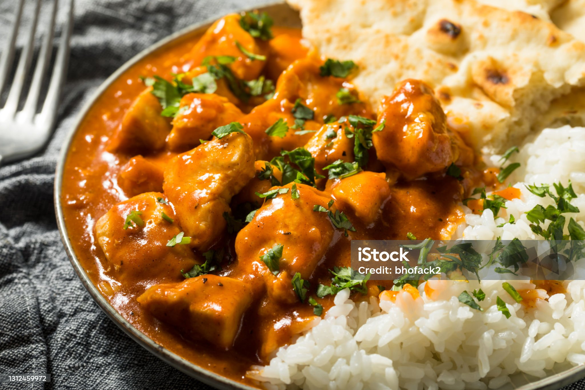

| Food Item | Item code | Dish Name | Discription | Price Per Portion |
|---|---|---|---|---|
| 001 | Lasagne Alla Bolognese | Lasagna Alla Bolognese is a popular dish all over the world, featuring multiple layers of beef, tomato, and onion bolognese sauce, bechamel sauce, and lasagne pasta sheets until the cheesy top. This is a rich and warming dish that goes perfectly with a bold red Italian wine. | Rs.15000.00 | |
| 002 | Gnocchi di Patate | Gnocchi di patate is a popular alternative to pasta, traditionally eaten at lunch in central Italy and made by grandmothers across the nation. Gnocchi can be eaten with most pasta sauces, so there are many exciting gnocchi flavours you can try. | Rs.12000.00 | 003 | Tiramisu | In a traditional tiramisù, the chef layers soft biscuits with espresso coffee, mascarpone cheese, sugar, egg, wine, rum, and cocoa powder. | Rs.10000.00 | tr>004 | Fettuccine al Pomodoro | Pomodoro is another classical Italian dish that is delicious in its simplicity. Pomodoro simply means “tomato,” and it is the tomato and basil sauce that gives this dish its iconic fresh taste. It is the perfect light dish to relax with after a long day exploring. | Rs.10000.00 |
Indian Foods
| Food Item | Item code | Dish Name | Discription | Price Per Portion |
|---|---|---|---|---|
| 001 | Pakora | Pakora is a savory, deep-fried Indian snack made with chunks of vegetables such as potato, cauliflower and eggplant, or meat of choice, which is then dipped in chickpea flour, seasoned with turmeric, salt, chili, or other spices, and deep-fried in ghee. | Rs.15000.00 | |
| 002 | Vada Pav | Vada Pav is a favorite sandwich-style snack from Mumbai, named after its ingredients: vada, or spicy mashed potatoes, which are deep-fried in chickpea batter; and pav, or white bread rolls. This iconic street food is said to have originated from a street vendor named Ashok Vaidya, who worked near the Dadar train station in the sixties and seventies, and came up with a way to satiate the hungry workers. | Rs.12000.00 | 003 | Naan | Naan is a well-liked flatbread with a chewy texture. It consists of white flour, yeast, eggs, milk, salt, and sugar, baked in a tandoor oven. Its characteristic tear-drop shape is achieved due to the way that the dough droops as it cooks on the tandoor walls. | Rs.10000.00 | tr> | 004 | Butter Chicken | A dish of tender chicken in a mildly spiced tomato sauce. It’s traditionally cooked in a tandoor (a cylindrical clay oven). The gravy is always made first by boiling down fresh tomato, garlic, and cardamom into a bright red pulp. This pulp is then pureed after cooling. Butter, various spices, and khoa (dried whole milk) is then added. | Rs.10000.00 |
Sri Lankan Foods
| Food Item | Item code | Dish Name | Discription | Price Per Portion |
|---|---|---|---|---|
| 001 | Chicken Kottu | Essentially it is composed of shredded pieces of Sri Lankan godamba roti, which is sort of like a giant sized paratha (an oily fried piece of thin dough), that is stir fried with an assortment of spices and a choice of other meaty (or vegetarian) ingredients | Rs.5000.00 | |
| 002 | Egg Hoppers | Traditionally eaten at breakfast, the savoury, bowl-shaped Sri Lankan take on pancakes are delicious any time. You'll find them everywhere, from street food stalls to restaurant menus. cooked in a small, high-sided pan, they are made from a batter of fermented rice flour, coconut milk, coconut water and a sprinkling of sugar. An egg is broken into the dish while it cooks. Typically it’s enjoyed with a spicy sambol.. | Rs.500.00 | 003 | Milk Rice | Kiribath is a dessert of rice cakes cooked in milk and served with jaggery. It's traditionally made for weddings, and is often the first solid food fed to babies. It is made by cooking rice with coconut milk and a small amount of salt until the grains are soft and sticky.. | Rs.10000.00 | tr>004 | Sri Lankan Love Cake | Sri Lankan love cake, also known as "love cake" or "spice cake," is a traditional Sri Lankan dessert that is made with a blend of aromatic spices and coconut milk. It is a dense, moist cake that is flavored with spices such as cinnamon, nutmeg, and cardamom, and it is often garnished with a sprinkle of coconut on top. | Rs.1000.00 |
Chinese Foods
| Food Item | Item code | Dish Name | Discription | Price Per Portion |
|---|---|---|---|---|
| 001 | Peking Roasted Duck | Peking duck (北京烤鸭 Běijīng kǎoyā) is a famous dish from Beijing, enjoying world fame, and considered as one of China national dishes. Peking duck is savored for its thin and crispy skin. Sliced Peking duck is often eaten with pancakes, sweet bean sauce, or soy sauce with mashed garlic. It is a must-taste dish in Beijing! | Rs.15000.00 | |
 |
002 | Dumplings | Dumplings (饺子 jiǎozi) are a traditional food type that is widely popular, especially in North China. Chinese dumplings consist of minced meat and/or chopped vegetables wrapped in a thin dough skin. Popular fillings are minced pork, diced shrimp, ground chicken, beef, and vegetables. Dumplings can be cooked by boiling, steaming, or frying. | Rs.5000.00 | 003 | Ma Po Tofu | Ma Po tofu (麻婆豆腐 Mápó dòufǔ 'Pockmarked Granny beancurd') is one of the most famous dishes in Chuan Cuisine (Sichuan food) with a history of more than 100 years. It consists of beancurd along with some minced meat (pork or beef) in a spicy sauce. The sauce is made from fermented black beans and chili paste (douban/douchi). | Rs.10000.00 | tr>004 | Chow Mein | Chow mein is the Cantonese pronunciation of the Mandarin chǎomiàn (炒面), which means 'stir-fried noodles'. This stir-fried dish consists of noodles, meat (usually chicken, beef, shrimp, or pork), onions, and celery. with a sprinkle of coconut on top. | Rs.10000.00 |